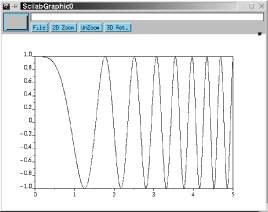
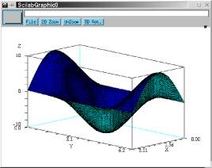
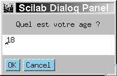

http://www.saphir-control.fr/

| http://www.saphir-control.fr/
|
-->x=[0:999]*5/1000;On peut, par la suite, utiliser ce vecteur pour évaluer la fonction et tracer la courbe (Fig. 1) :
-->y=cos(2*x^2); -->plot2d(x,y)
L'opérateur <<:>> dans [0:999] permet de définir un vecteur d'entiers allant de 0 à 999.

Figure 1: Exemple d'un plot2d
-->dy=y(2:$)-y(1:$-1);
-->p=dy(1:$-1).*dy(2:$);
-->x_ext=x(find(p<=0))
x_ext =
column 1 to 8
! 1.25 1.765 2.165 2.5 2.795 3.065 3.31 3.54 !
column 9 to 15
! 3.755 3.96 4.15 4.335 4.515 4.685 4.85 !
L'opérateur <<$>> désigne l'indice du
dernier élément (1000 dans le cas de y et 999 dans le
cas de dy) et l'opérateur <<.*>>
désigne le produit élément par élément. Le
résultat de p<=0 est un vecteur de booléens dont les
indices correpondant aux éléments ayant la valeur vraie
(%t en Scilab) sont determinés par la fonction find
.-->x=[0:99]*%pi/100;y=[0:99]*2*%pi/100; -->M=10*sin(x)'*cos(y);plot3d(x,y,M)
L'opérateur <<'>> correspond à la transposition donc sin(x)'*cos(y) est le produit d'un vecteur colonne de taille 100 par un vecteur ligne de taille 100, ce qui est une matrices à 10000 éléments.

Figure 2: plot3d de la fonction 10sin(x)cos(y)
-->exec toto.sceLe langage Scilab permet aussi de définir de nouvelles fonctions. Le mot-clé function est utilisé pour déclarer le début d'une fonction dans un fichier texte.
function v=mafonc(v,op)
// cette fonction recoit un vecteur v
// et une chaine de caracteres indiquant
// l'operation a effectuer sur v
if v==[] then return;end
select op
case "aleatoire" then
// dans ce cas on melange de maniere
// aleatoire les elements de v
vrand=rand(v); // rand est un generateur
// de nombre aleatoire
[junk,ind]=sort(vrand);
v=v(ind);
case "decroissant" then
// dans ce cas on trie les elements de v
// dans l'ordre decroissant
v=sort(v);
case "croissant" then
v=-sort(-v);
else
error("operation non prevue !");
end
Noter l'utilisation de <<//>> pour indiquer les
commentaires. La fonction mafonc, définie dans le fichier
mafonc.sci peut alors être <<chargée>> et
utilisée dans Scilab comme suit :
-->getf mafonc.sci -->y=mafonc([2,5,4],"aleatoire") y = ! 5. 2. 4. !Il existe aussi la possibilité de définir des fonctions <<en-ligne>>. Par exemple l'instruction sort(x) trie les élements de x dans l'ordre décroissant. On peut alors facilement définir en ligne la fonction trie qui trie dans l'ordre croissant:
-->deff("y=trie(x)","y=-sort(-x)")
Une fonction est un objet dans Scilab au même titre qu'un vecteur ou une
matrice de chaîne de caractères. Dans l'exemple suivant, on passe
une fonction comme argument d'une autre fonction :
function x=bubble(x,fun)
// cette fonction realise un bubble sort
// x est un vecteur de nombres complexes
// fun est une fonction definissant
// la relation d'ordre a utiliser
n=size(x,"*"); // n est le produit des
// 2 dimensions de x
fini=%f;
while ~fini
fini=%t
for i=1:n-1
if fun(x(i),x(i+1)) then
tmp=x(i);
x(i)=x(i+1);
x(i+1)=tmp;
fini=%f
end
end
end
Pour utiliser cette fonction, il faut d'abord définir une fonction
définissant la relation d'ordre choisie, par exemple la relation d'ordre
correspondant à la norme :
function test=cmp_nrm(a,b) test=norm(a)>norm(b); // test est booleenAlors pour trier un vecteur de nombres complexes suivant leurs normes, il suffit de charger les deux fonctions et de faire par exemple :
-->bubble([1+%i,2,4*%i],cmp_nrm) ans = ! 1.+ i 2. 4.i !La fonction bubble a peu d'intérêt dans ce cas car le tri des vecteurs peut en général se faire de manière plus efficace par vectorisation. Mais si la structure à trier contient des éléments autres que des simples scalaires, elle peut être très utile. Mais pour cela il faut modifier bubble pour qu'il accepte des structures. Une façon de coder des structures dans Scilab est d'utiliser la commande list. Une structure peut contenir des objets hétérogènes : des matrices, des chaînes de caractères, des booléens, des polynômes, et même d'autres structures. Les éléments d'une structure peuvent être manipulés presque comme ceux d'un vecteur, donc les modifications à faire dans bubble sont minimes ; en particulier il suffit de remplacer size(x,"*") par size(x) car contrairement aux vecteurs, qui ne sont que des matrices particulières, les structures n'ont qu'une seule dimension. En utilisant la même fonction cmp_nrm, on peut maintenant (ayant fait la modification dans bubble), trier des matrices selon leur norme comme suit :
-->ll=list(rand(2,3),[1,2;5,4],eye(2,2));
-->ln=bubble(ll,cmp_nrm)
ln =
ln(1)
! 1. 0. !
! 0. 1. !
ln(2)
! 0.84974 0.87821 0.56084 !
! 0.68573 0.06837 0.66235 !
ln(3)
! 1. 2. !
! 5. 4. !
-->age=x_dialog(["Quel est votre age ?"],"18")

-->help plot2dLa page du manuel correspondant à plot2d s'ouvre alors dans une fenêtre. Si on ne connaît pas le nom de la fonction, on peut faire une recherche par mots-clés, par exemple :
-->apropos plotOn obtient alors la liste des fonctions contenant plot comme mot-clé (les mots-clés sont bien-entendu en anglais). On peut aussi accéder à ces fonctionnalités en cliquant sur le bouton help de la fenêtre principale de Scilab. Dans ce cas, on obtient, en plus, une liste souvent très utile des fonctions classées par thème. Il existe aussi un ensemble de démos des applications types disponibles depuis les menus de la fenêtre principale.
This document was translated from LATEX by HEVEA.